What shipped, what it looked like, and why each decision went the way it
did — including the options that were rejected, which are usually the more
interesting half. Newest first.
Spec 004Rooms, flows and peopleapproved · building
Rooms that look like rooms
The schematic drew every component as an abstract mark. It generated
cleanly from data and it was legible — but a cylinder reads as a cylinder,
not as a CO₂ scrubber you could walk up to and service. Three things
followed from that, and one gameplay problem sat behind all of them.
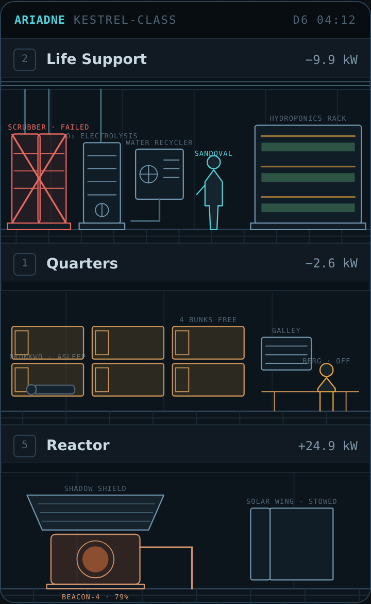
Chosen — Elevation. Back wall, ceiling conduit, grated
floor. The scrubber is visibly two amine beds on a plinth. A crew figure
is 1.7 m, which sets the scale for everything else.
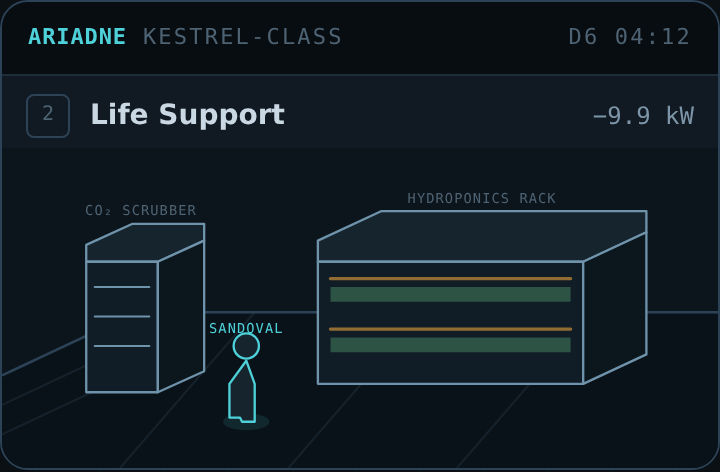
Rejected — Dimetric. More object-like, and it eats the
viewport: four machines no longer fit across a phone, and every part
becomes three faces with overlap ordering to resolve.
Decision · elevation over dimetric
Projection looks more like a game and costs horizontal space. On a
portrait mobile game that is the wrong trade — the same four machines
stop fitting, and the per-part drawing cost roughly triples.
Rejected: dimetric projection, and a full-perspective interior.
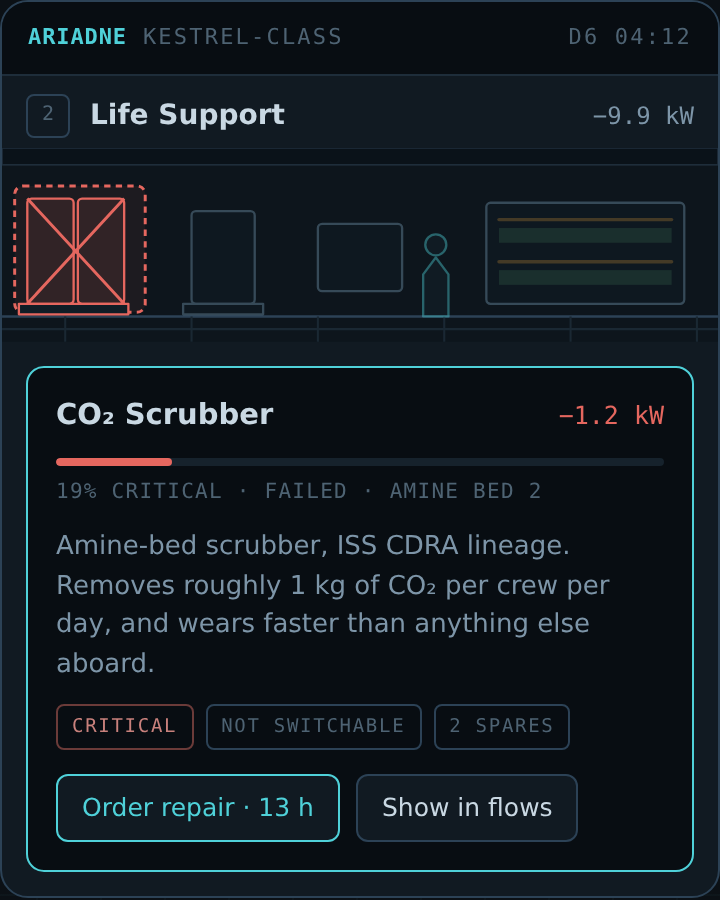
Tapping a machine opens that machine, held highlighted
above its card — instead of expanding a list of four and making you find
the one you were already looking at.
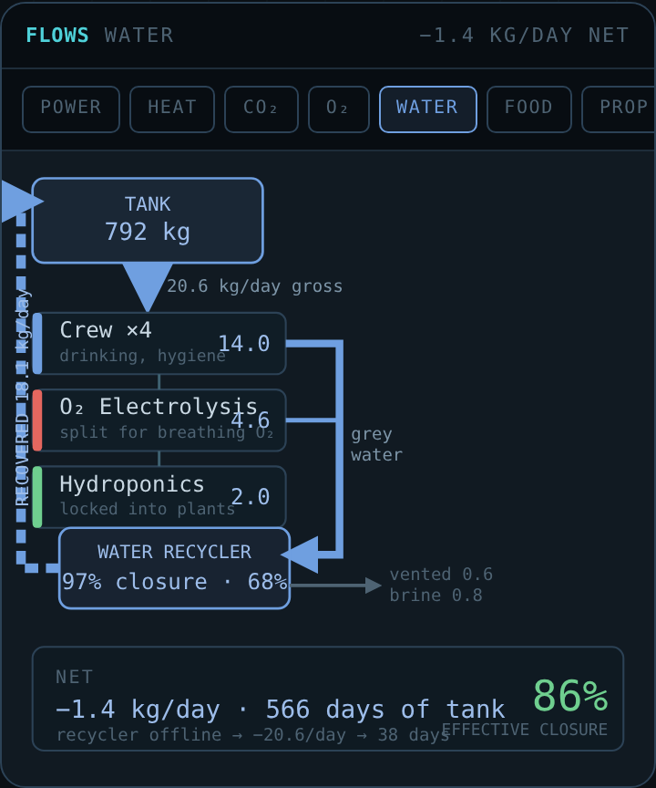
Water is a loop. The Life tab says "86.1% loop
closure" and gives no cause; here the 2 kg/day the hydroponics locks
into plants visibly leaves the circuit.
Decision · the flow overlay is deleted, not fixed
Three parallel lines in a 12-unit margin can encode how much passes each
deck and nothing else, because there is nowhere to route an edge
sideways. Flow views exist to show what connects to what. It becomes its
own view with one channel per Life gauge, plus power —
eight in total — with named nodes, ranked consumers, buffers off to one
side, and returns drawn as returns.
Nothing is lost: per-deck magnitude was already printed in every deck
header, which was the only thing the overlay communicated successfully.
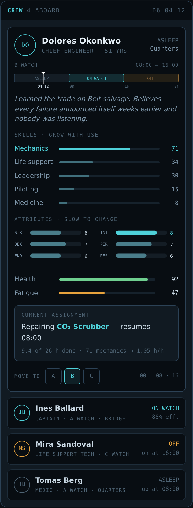
A 24-hour strip per person — eight asleep, eight on, eight off,
with a marker at the current time. "B watch" stops being a letter and
becomes the block that is lit.
Decision · crew must be present to matter
The design says equipment and crew determine how well the
networks run. Equipment already did — condition derates output on a
0.62–1.0 curve. Crew did not: the life-support bonus capped at
+1.5 percentage points of closure and read the best
skill aboard, so a technician asleep in her bunk improved the
water loop exactly as much as one standing at the recycler.
Now a crew member contributes only while on watch and stationed
in that system's room, scaled by their current effectiveness so
fatigue and bad air feed back into it. Upgrade tiers raise the
base; crew raise the multiplier — so a superb
technician cannot substitute for a worn-out recycler, and a new recycler
still runs better tended.
Constraint kept: efficiency changes only at moments the simulation
already re-resolves, so offline catch-up stays bit-identical.
roomViews scaled water use by part condition.
lifeBalance does not — and deliberately: a worn electrolysis
unit drinks the same water and returns less oxygen for it. That
is the inefficiency. Scaling both ends would hold efficiency constant and
leave nothing for maintenance or a better unit to improve.
So the drawn figure and the spent figure disagreed whenever a part was
off full condition, which on a thirty-one-year-old hauler is always. Two
tests now lock the selector to the simulation rather than to a constant.
Spec 003#14shipped
The ship you can see
Before this, the ship was a list of collapsible rows. Everything the
simulation knew was reachable — tap a deck, read the parts — but
nothing was visible. You could not glance at the Ariadne and see
that three of four crew were asleep.
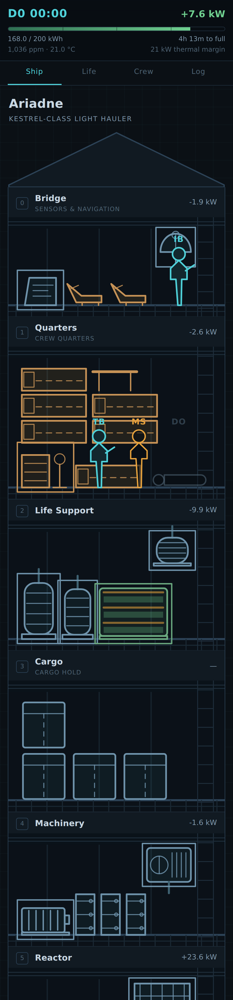
Shipped. Rooms generated from rooms.json and
parts.json, everything at its real size in metres, and crew
standing in the room they are actually in.
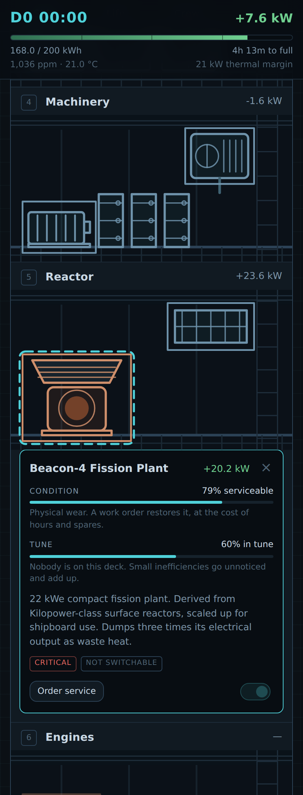
Tapping a machine opens that machine, held highlighted above
its card. Condition and tune are separate problems with separate
answers.
Three directions were mocked up before any production code was written:
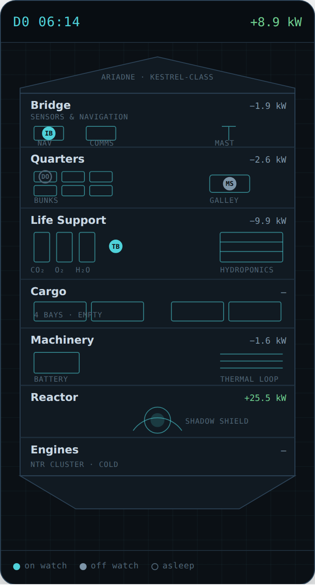
Chosen — Schematic. Generated from data.
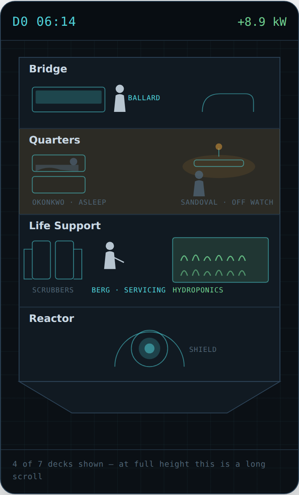
Rejected — Cutaway. Read best of the three.
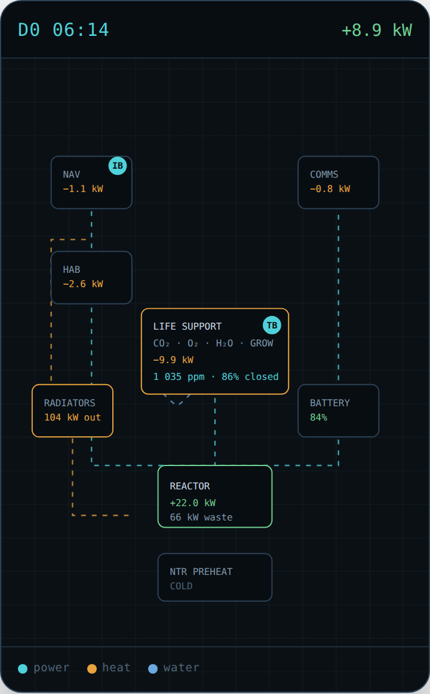
Deferred — Flow. Returned in 004 as its own view.
Decision · data-driven art over better-looking art
The cutaway looked best. It was rejected because art does not come out of
JSON: every new component would have become an art commission, quietly
turning the content pipeline into an art pipeline. What the cutaway
was right about is colour as meaning — warm where people rest,
green where things grow, red where something failed — and that was kept.
Rejected: illustrated cutaway. Deferred: flow as a competing view.
Decision · crew locations are derived, never stored
A marker's deck comes from activity, work order and declared station. No
field was added to the saved state, so there is no migration, no new
determinism surface, and the picture cannot drift out of agreement with
the roster — because there is nothing to keep in sync.
Bodies travel circular coplanar orbits at their real radii and periods, so
a position is a closed-form function of time and catch-up never has to
integrate anything. Transfers are Hohmann conics.
Decision · numbers you can check against a textbook
Earth to Mars comes out at 5,594 m/s over 258.9 days,
against published figures of ~5.6 km/s and ~259 days. The Earth–Mars
synodic period lands at ~780 days, and the departure phase angle at ~44°.
Fourteen tests assert those rather than asserting whatever the code
happens to produce.
Not modelled, and stated rather than hidden: inclination, eccentricity,
n-body perturbation, continuous low thrust.
Site#12shipped
The homepage was being hijacked by the game
Bug · a stale service worker outliving its deployment
The site root served the game instead of the project page. The deploy was
correct — the artifact contained the right file at the right path. An
earlier build of the game had registered a service worker at the
domain root rather than under /play/, and it went on
intercepting navigation and serving its own cache.
Fixed with a self-destructing worker at the root that unregisters the old
one and clears its caches. It has to stay deployed: deleting it would let
any still-cached copy resume.
M1shipped
The living ship
Five coupled resource networks, wear and failure, work orders, and four
crew on a watch bill. A failed scrubber raises cabin CO₂, which lowers crew
effectiveness, which slows the repair on the scrubber.
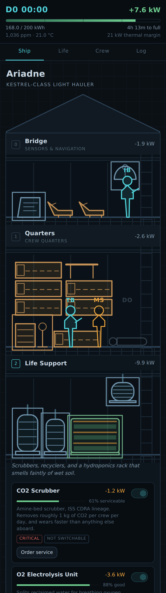
Tended.
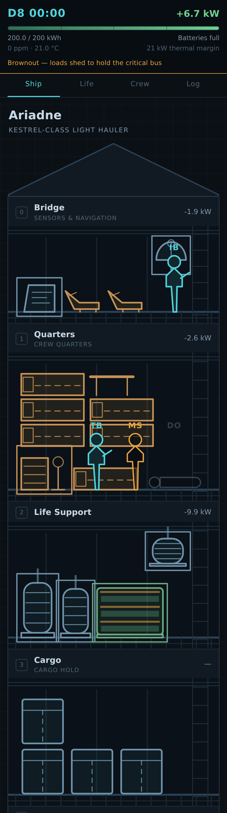
The same ship, eight hours later, after being left drawing more than it made.
Decision · the ship may shed loads, but never kill anyone unattended
Left in deficit, the ship browns out and sheds loads on its own authority
to hold the critical bus — and tells you what it did when you come back.
What it will not do is switch off its own scrubber to save power. No
crew member dies without foreshadowing and a decision you were given the
chance to make.
Decision · levels are derived, never accumulated
Reservoirs are (value, rate, since) and anchors move only
where rates change. Advancing a month in one jump is bit-identical to
advancing it in a thousand steps, which is what makes offline catch-up
run the same code path as live play instead of an approximation of it.
Rejected: a tick loop with a catch-up fast-forward — two code paths that
would drift.
M0shipped
A world that keeps running
Event-driven simulation, seeded PRNG, command-sourced saves, and time that
passes at 24× — one real hour is one game day — whether or not the app is
open.
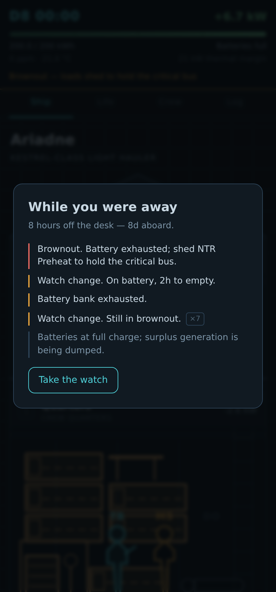
What the ship tells you on your return. Worst news leads.
Decision · the player is an institution, not a person
There is no point-of-view character. You are a nameless representative of
your guild, working an operations desk. The captain is an NPC with her own
judgement, which is what makes light-lag a mechanic rather than an
annoyance: at Ceres your orders are twenty minutes stale, and somebody
aboard has to decide without you.
Decision · permadeath, and ageing
Crew age, take other berths, settle down on a station, and die. They are
not a renewable resource. This is the reason the fair-play rules exist in
the shape they do — a game that can kill people while you sleep has to be
very careful about what it does while you sleep.
Decision · the simulation never reads the clock
Math.random, Date.now and new Date
are lint errors inside the simulation package. Randomness comes from a
seeded generator; wall-clock time is always passed in. That is what keeps
cloud save and a shared universe open later, and it is enforced by the
build rather than by discipline.